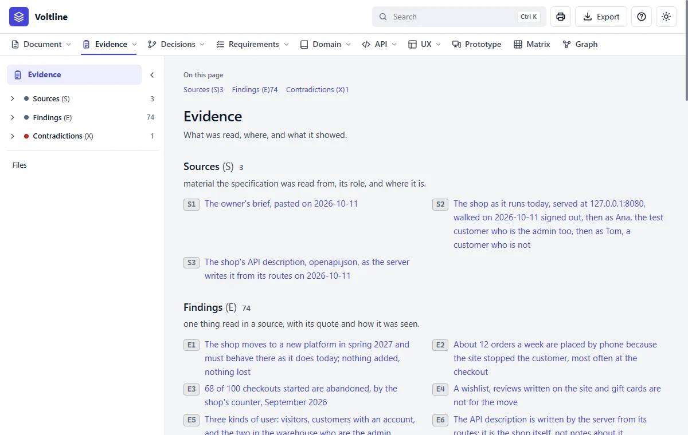
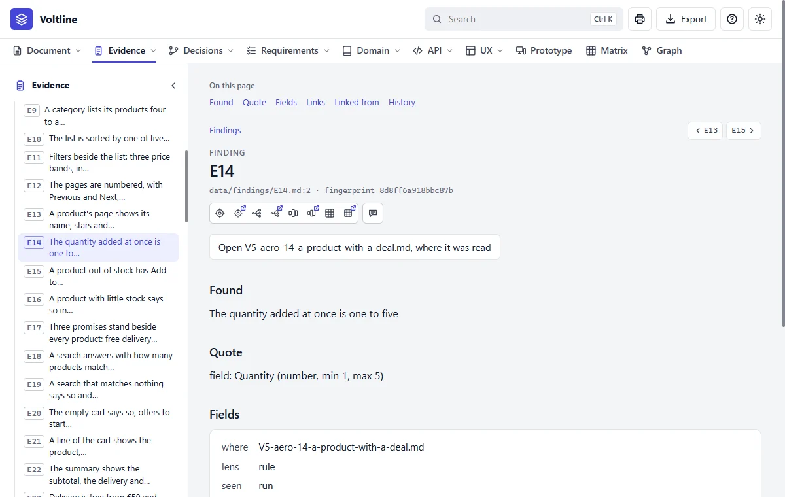
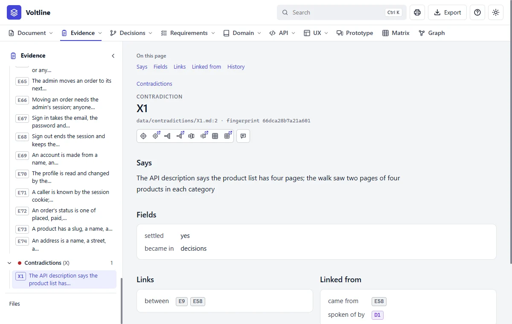

Part 3: Reading what you get
Evidence
In everyday termsThe receipts. When you're told something is true, the natural question is how do you know? This module keeps what was read and seen, with exact quotes, so nothing rests on someone's word.
What it answersWhere did this come from, and can I see it for myself?
What's in it

- 1The tree holds everything in the module. Only the arrow beside a name folds it.
- 2Files. What was read: captures, agents' reports and analyses.
- 3Sources (S). What was read. Voltline has three: the owner's brief, the running shop and its API description.
- 4Findings (E). One thing read in a source, with its quote.
| Kind | Letter | What it is | In Voltline |
|---|---|---|---|
| Source | S | Something the specification was read from, and what role it plays | 3 |
| Finding | E | One thing read in a source, with its quote and how it was seen | 74 |
| Contradiction | X | Where findings disagree, and how that was settled | 1 |
A finding, part by part

- 1Where it was read. Opens the capture it came from.
- 2Found. The fact, in plain words.
- 3Quote. The source's own words.
- 4Where, lens and seen. The file, what was looked for, and how it was seen.
Read it like this
- Start from a requirement or a rule, not from here. Its page lists what it came from.
- Open a finding and read its Quote. Does it really say that?
- Check seen.
runmeans it was seen in the running product, which is stronger than a document saying so. - If in doubt, open the capture and read around the quote.
When sources disagree

A contradiction is a good thing to find. It means the skill noticed two sources disagreeing, and didn't quietly choose one. A specification can't be agreed while one stands unsettled.
Mistakes people make
- Taking a finding for a requirement. A finding says what is so. A requirement says what shall be so.
- Reading a quote without its source. A line in an old document and a line seen on the running site aren't worth the same.